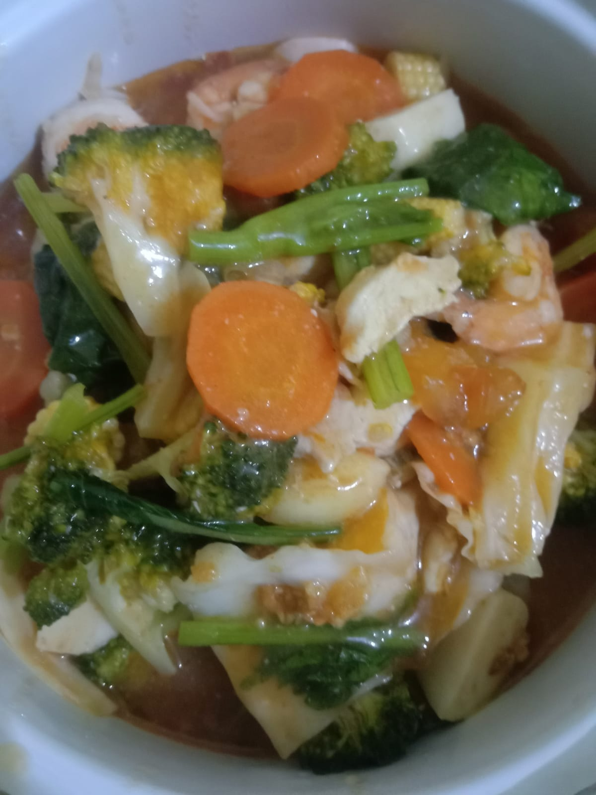
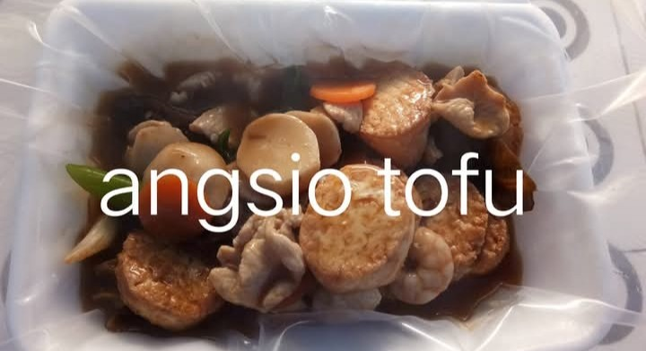

Capcai

Kwetiau Goreng

Labu Tumis Telor & Wortel

Perkedel Kentang

Pokcoy Tumis

Sop Pare

Tofu

Klik menu untuk melihat deskripsi makanan
Catatan:
Untuk request pemesanan makanan atau menu lainnya bisa langsung klik
link WhatsApp di atas.
Selamat menikmati makanan Dapur Yen Yen Vegetarian 😊